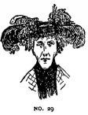

Thursday, August the 19th, 2004
back to: title, date or indexes

This is Number 29 in the series Some Sketches, Found On The World Wide Web, Of People Wearing Hats. If you would like instructions for making this hat, please write to the Hooting Yard Database Of Instructions For Making Hats, quoting Number 29 and indicating the size of your head*.
* IMPORTANT NOTE : Please use the Blodgett Scale Of Human And Animal Head Sizes™.